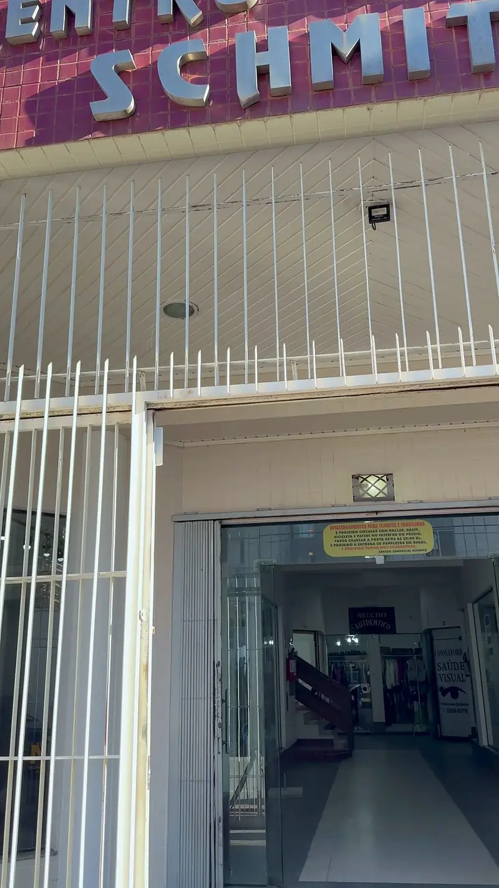
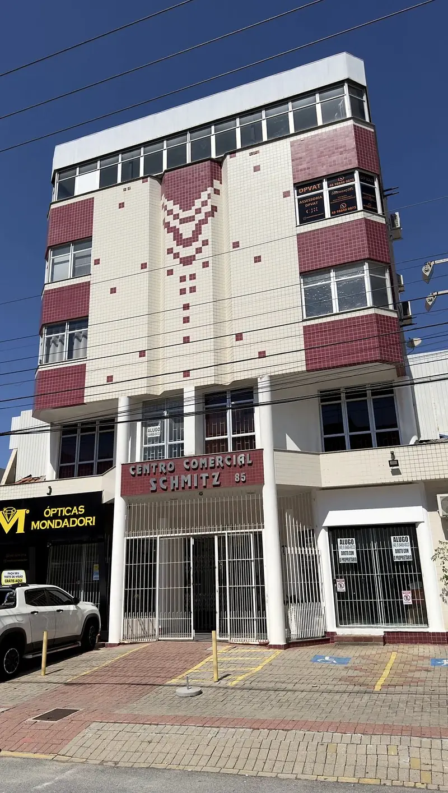

Alugar sala comercial no Kobrasol: guias para decidir bem
Contrato, garantia, documentos, licenças e como escolher a sala. Texto direto, escrito por quem administra o prédio.

Passo a passo para alugar sua primeira sala comercial em São José/SC: visita, contrato, garantia, alvará e vistoria. Guia prático do Kobrasol.
4 min de leitura
Planeje recepção, sala de atendimento, guarda de materiais e fluxo de pacientes em um consultório de 35 a 40 m², no Kobrasol, São José.
6 min de leitura
Antes de alugar sala para consultório no Kobrasol, São José/SC: viabilidade, alvará, vigilância sanitária, acesso e contrato. O que conferir.
4 min de leituraDireitos e deveres do inquilino de sala comercial em linguagem simples: aluguel, reformas, devolução, preferência e renovação do contrato.
4 min de leituraQuais documentos reunir para alugar sala comercial: do inquilino, da empresa, do garantidor e do proprietário. Lista prática e o que conferir.
4 min de leituraCaução, fiança, seguro-fiança ou fundo de investimento: como funciona cada garantia no aluguel comercial e como escolher a melhor para o seu negócio.
4 min de leitura
Condomínio, IPTU, água e energia: o que costuma estar incluso no aluguel de uma sala comercial, o que fica de fora e como comparar propostas.
4 min de leitura
Sala comercial no Kobrasol, São José/SC: o que o bairro oferece a quem abre um negócio, e o que avaliar antes, como estacionamento e acesso.
4 min de leitura
Térreo ou andar? Veja como escolher a sala comercial certa no Kobrasol pelo tipo de cliente, visibilidade, escada, privacidade e custo.
4 min de leitura
O que considerar ao alugar sala para escritório de advocacia, contabilidade ou consultoria em São José/SC: privacidade, acesso, tamanho e contrato.
4 min de leitura
Alugar sala comercial direto com o proprietário no Kobrasol, São José/SC: conversa sem intermediários, contrato claro e conta previsível.
4 min de leituraQuer ver uma sala?
Direto com o proprietário. Visitas de segunda a sexta, das 8h às 18h, e aos sábados, das 8h às 12h.
Falar no WhatsApp (48) 98468-0088 →